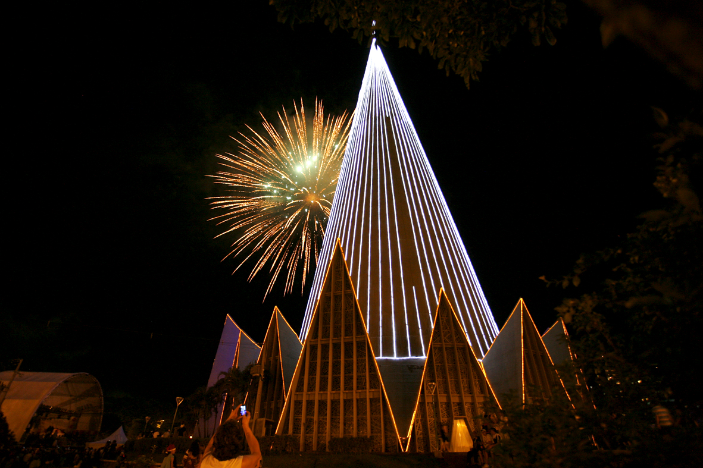
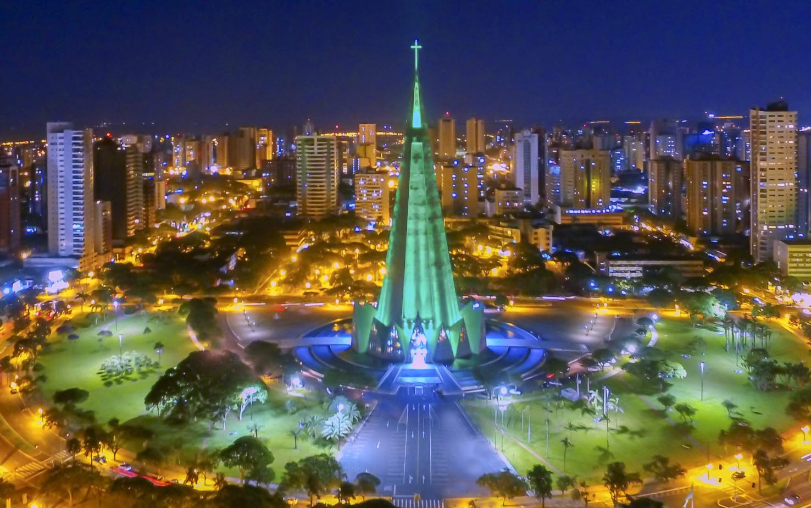

CATEDRAL DE MARINGÁ
A Catedral Basílica Menor Nossa Senhora da Glória, conhecida como Catedral de Maringá, é um dos monumentos mais importantes do Paraná e o principal símbolo da cidade de Maringá. Sua construção começou em 1959 e foi concluída em 1972. O projeto foi inspirado nos foguetes espaciais da época, o que deu ao templo um formato cônico único e moderno. Com aproximadamente 124 metros de altura, a Catedral de Maringá é considerada uma das igrejas mais altas da América Latina. Além de sua arquitetura marcante, o local possui belos vitrais, um amplo espaço para celebrações religiosas e um ambiente de tranquilidade para visitantes e fiéis. A catedral é dedicada a Nossa Senhora da Glória, padroeira de Maringá, e recebe milhares de turistas e peregrinos todos os anos. Em 2015, foi elevada ao título de Basílica Menor, reconhecimento concedido pela Igreja Católica devido à sua importância religiosa e histórica. Atualmente, a Catedral de Maringá é um dos principais cartões-postais do Paraná, destacando-se não apenas por sua beleza arquitetônica, mas também por seu valor cultural, religioso e turístico, sendo um destino indispensável para quem visita a região.
TEMPLO DO PARANÁ
A construção da catedral teve início em 1959 e foi concluída em 1972. Com cerca de 124 metros de altura, ela se destaca como uma das igrejas mais altas da América Latina. Em seu interior, os visitantes podem admirar belos vitrais coloridos, imagens sacras e um ambiente amplo, que transmite paz e espiritualidade. Além de ser um importante local de celebrações religiosas, a Catedral de Maringá também é um dos principais pontos turísticos da cidade. Todos os anos, milhares de pessoas visitam o monumento para conhecer sua história, apreciar sua arquitetura e participar de missas e eventos religiosos. Por sua beleza, importância histórica e valor cultural, a Catedral de Maringá tornou-se um dos maiores patrimônios do Paraná. Ela representa a fé, o desenvolvimento da cidade e o orgulho dos maringaenses, sendo um destino que atrai visitantes de diferentes regiões do Brasil e do mundo.
templo cultural
A Catedral de Maringá, localizada no Paraná, é um dos principais cartões-postais da cidade. Inaugurada em 1972, possui uma arquitetura moderna em formato de cone, com 124 metros de altura, sendo considerada uma das igrejas mais altas da América Latina. Além de sua importância religiosa, a catedral é um símbolo de fé, cultura e turismo, atraindo visitantes de diversas regiões.

TÍTULO
A memória e o patrimônio da Catedral de Maringá representam a história, a fé e a identidade cultural da cidade. Inaugurada em 1972, a Catedral Basílica Menor Nossa Senhora da Glória destaca-se por sua arquitetura moderna em formato cônico, sendo um dos principais cartões-postais de Maringá. Além de seu valor religioso, o monumento guarda lembranças de gerações de moradores e simboliza o desenvolvimento da cidade, preservando sua história e fortalecendo o sentimento de pertencimento da comunidade.


o que é a catedral
A Catedral de Maringá, também conhecida como Catedral Basílica Menor Nossa Senhora da Glória, é um dos lugares mais famosos do Paraná. Ela está localizada no centro de Maringá e se destaca por sua arquitetura moderna e por seu formato de cone. A construção da catedral começou em 1959 e terminou em 1972. Ela possui cerca de 124 metros de altura, o que faz dela um dos maiores templos religiosos da América Latina. No interior, existem belos vitrais e uma grande cruz, que chamam a atenção dos visitantes. A catedral é um importante ponto religioso, histórico e turístico de Maringá. Todos os anos, muitas pessoas visitam o local para conhecer sua arquitetura, tirar fotos e participar das celebrações religiosas. Por sua beleza e importância, a Catedral de Maringá se tornou um dos principais símbolos da cidade.

tamanho
metros da catedral
Uma curiosidade sobre a Catedral de Maringá é que ela tem 124 metros de altura, incluindo a cruz no topo, sendo uma das igrejas mais altas da América Latina\! Sua forma de cone foi inspirada nos foguetes espaciais, simbolizando a ligação entre a Terra e o céu.
duração
Uma curiosidade sobre a Catedral de Maringá é que sua construção durou cerca de 14 anos, sendo iniciada em 1959 e inaugurada em 1972.